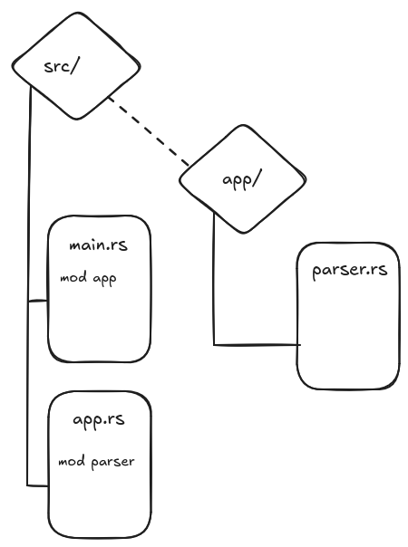
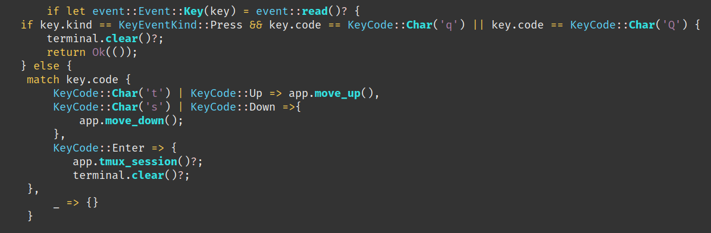
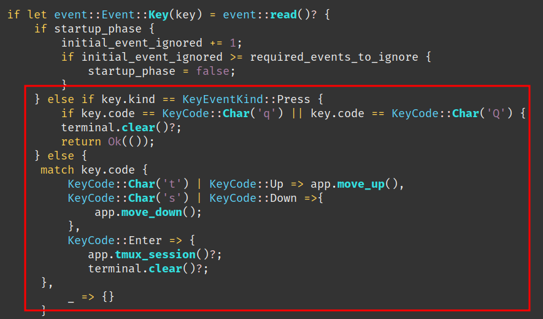
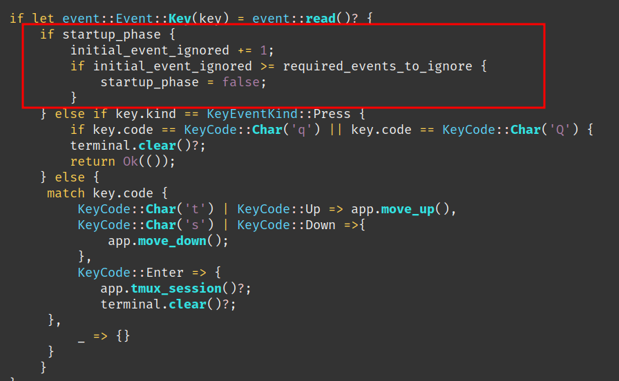
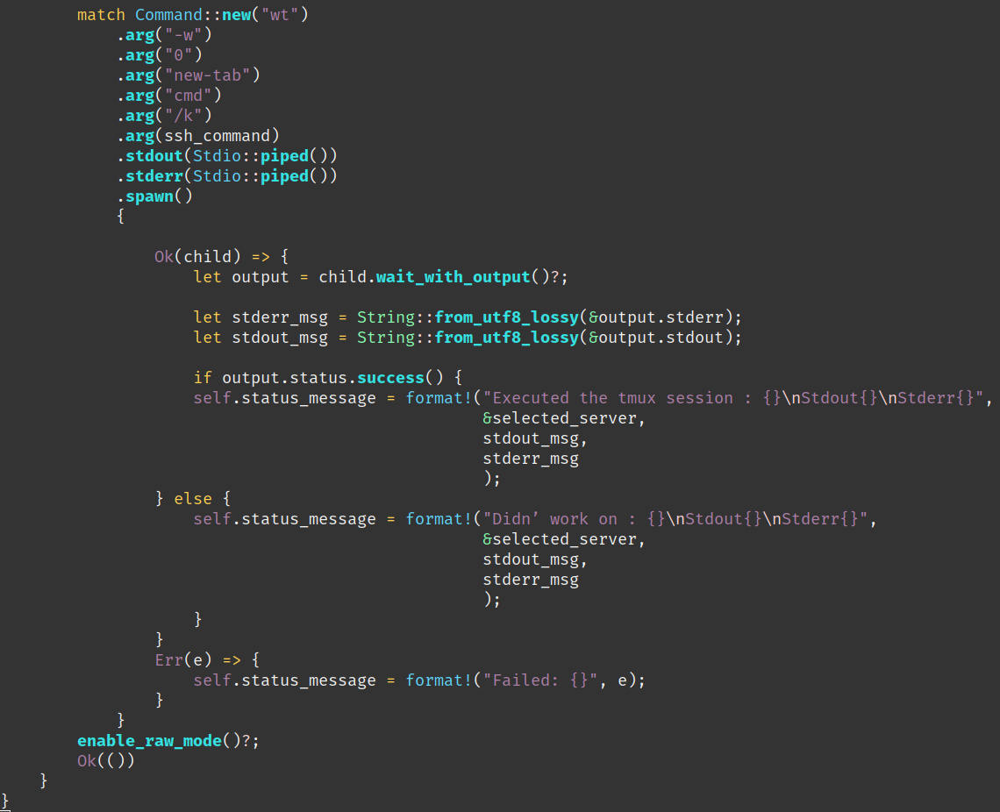

I have quite a long list of hosts that I need to connect to through ssh. I wanted to have an easy way to select the host I will connect to.
With what I have learn so far on Rust, Ratatui and using Claude.ai. I have decide to build a simple TUI which will parse my ssh config file and provide a list of all servers from it.
From this list I can then trigger an ssh connection on a separate tab.
The current version is for now working on Windows only for my personal needs but a Linux version is not far from working.
For this small TUI, on Windows, I’m relying on Windows Terminal to open a new ssh connection on a separate tab.
The architecture is simple. I have started to build a first POC of this app all in a main.rs file.
But then things started to get bigger and difficult to read inside a single file so I moved to modules.


So I had to re-write my code this way ( RedBox ) basically adding another if statement to split the KeyEvent Press detection from the detection of the “q” key. With this code the navigation works correctly on Windows.

Another strange behaviour in Windows is that when the app is started, systematically the first element in the list was automatically triggered.
So until I understand what is the exact issue as a workaround, I ignore the first Key event read ( Enter key ).
I’m supecting that the “Enter key” - when launching the app from the CLI - is carried over inside the app itself, also that’s a wild guess.
With a simple additional if statement I’m ignoring the first Key event caught by the app.

I needed this to work on a Windows machine, at first I wanted to have this working in WSL2 and get everything working on Linux only, this was the simplest and easiest way to build and test it work for me.
The idea was to trigger a TMUX session (hence a function call “tmux_session”), which was then immediately after TMUX session initialization, triggering the ssh session to the target server.
This was working on my main Linux machine but didn’t managed to make it work on my WSL2 environement, where the TMUX starts and exit immediately reporting that the ssh command is not found.
This requires deeper troubleshooting and I couldn’t afford to spend more time on.
So I took another path and looked for another solution.
The first option I found was to use WezTerm an indepentend cross-platform terminal, which had one interesting advantage is the integration of ssh within the terminal.
After some testing, it appears this was not a good option, it was not dealing well with slow connection and timing out very quickly. Same here couldn’t afford to spend more time to troubleshoot why this was happening.
Finally I moved to using Windows terminal, and the idea is that I launch a new tab from which I then trigger an ssh command.
Yatta ! It works !!
To build this app, I used Rust standard lib documentation, Ratatui forums and other old style web search. Also, as it is the trend in this journey I have heavily used generative AI.
This time I learn a lot with the code provided by Claude.ai.
I have discovered new method from the standard lib that I never tought exist.
One of the great benefit of building this small app was to better understand how to deal with external command triggered form your Rust app.
For instance in this is the function to trigger my ssh session in a new Windows Terminal tab.

https://doc.rust-lang.org/std/process/struct.Command.html#method.spawn
Using specifically spawn() method, it trigger a child process which give me the ability to trigger several ssh session one after the other and I can get the stdout and stderr of the trigger command which help me a lot for debug. This solution was provided by Claude.ai.
One more “good” thing is that generative AI are still doing a lot of mistakes. And this also help me in the way that I have to understand the code I’m using. I can then fix myself issues/bugs created by the Generative AI tool.
To sum-up, I see GenAI is getting better and better on the code it provides but this has to be used as a another tool in you sleeves to increase your productivity ( and it inrcease it a lot!! ).
Also, it is mandatory for the developper to ready 100% of what is produced to have a full control and understanding of what your software is made of before you commit, to know what you will push to your colleagues :D
In corp, at the end of the day how many developper have a full knowlege of the full code base of the application built by their own company?
As usual the code is available, you can find it here:
https://github.com/Vagrantin/essaysahTui
With kind regards
Matthieu